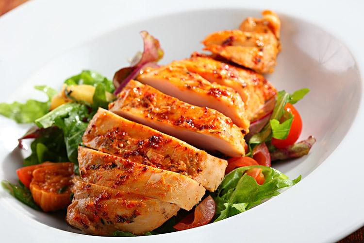

- Coma uma variedade de frutas e vegetais.
-

- Inclua proteínas magras, como peixe e frango.
-

- Inclua carboidratos complexos, como grãos integrais e batatas.
-

- Faça escolhas alimentares saudáveis ??quando comer fora de casa.
-

- Beba muita água e evite bebidas açucaradas.
Lembre-se de que a alimentação saudável é um estilo de vida e não uma dieta temporária. Faça escolhas saudáveis ??a cada dia e seja paciente consigo mesmo ao atingir seus objetivos de saúde.